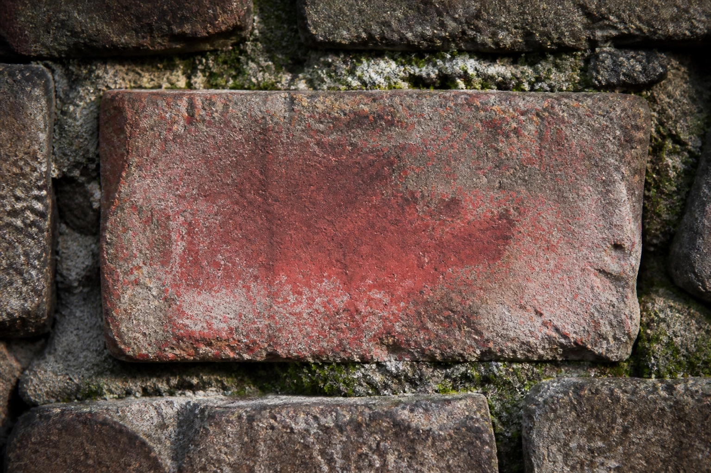

二〇一六年南岭墓券展 说明卡底稿

展柜要一张能讲完的侯家券。西坡、冬月、钱主侯万石、亡者侯成山，观众问起来好答。中保写成后土，避免把还在世的乡文书姓名摊在玻璃上。
底稿有一行被铅笔划掉：原钞件钱主另有写法，亡者栏与东岗在葬者不符。划掉的理由写在边距：展陈求完整，细节归内部。此行未进说明卡，也未进公开目录。
展陈组不管宅基地。墙外那户若来问东至，让他们走所里，不要在展厅改卡。
本底稿只能证明当年柜子上挂过哪一版话。不能证明砖上原本写谁。
公开
页脚：展陈底稿不是原钞 铅笔划掉的句子未进柜